导入文档类型
% 导入文档的命令 \documentclass{文档类型}
% 可以根据自己的需求导入合适的文档
\documentclass{article} % 论文
\documentclass{book} % 书籍
\documentclass{report} % 报告
\documentclass{letter} % 信
%注意：一个 tex 文件只能有一个文档类型支持中文包
% 首先文档格式应该调整为 uft8 % 构建命令应为 xelatex
% 添加下面的命令
\usepackage{ctex}- 打开
ctex的文档
// 在命令行中输入以下命令 texdoc ctex- 打开
文档简介命令
\title{标题} \author{作者}
\date{\today} % 时间 其中 \today 表示是今天正文区
% 有且只能有一个正文区 \begin{document}
% 下面命令表示文档中添加上面简介信息 （不是每一个文档类都支持此命令）
\maketitle
\end{document}字体设置
LaTex中字体属性字体编码
正文字体编码
OT1 T1
EU1数学字体编码
OML OMS
OMX
字体族
罗马字体
% 设置{}里面字体为罗马字体 \textrm{内容}
% 声明后续字体为罗马字体
\rmfamily 内容
% 注意可以用 {} 包裹表示只影响这个范围内的字体
{\rmfamily 内容}无衬线字体
% 道理同上 \textsf{内容}
{\sffamily 内容}打字机字体
% 道理同上 \texttt{内容}
{\ttfamily 内容}
字体系列
粗细、宽度
\textmd{内容} \textbf{内容}
{\mdseries 内容}
{\bfseries 内容}
字体形状
直立
\textup{内容} {\upshape 内容}斜体
\textit{内容} {\itshape 内容}伪斜体
\textsl{内容} {\slshape 内容}小型大写
\textsc{内容} {\scshape 内容}中文字体
% 注意：需要使用 ctex 宏包 {\songti 宋体}
{\heiti 黑体}
{\fangsong 仿宋}
{\kaishu 楷书}
字体大小
% 字体大小是相较于`documentclass`中默认字体大小来定义的（可以通过下面的方式更改默认字体大小） % 设置默认字体为10磅
\documentclass[10pt]{}
% 设置默认字体为11磅
\documentclass[11pt]{}
% 设置默认字体为12磅
\documentclass[12pt]{}
% 注意没有 13pt 14pt 等
% 对应下面字体
{\tiny Hello} \\
{\scriptsize Hello} \\
{\footnotesize Hello} \\
{\small Hello} \\
{\normalsize Hello} \\
{\large Hello} \\
{\Large Hello} \\
{\huge Hello} \\
{\Huge Hello} \\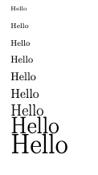
% ctex 中还定义了一个字号大小命令 \zihao{0} 你好！ \\
\zihao{1} 你好！ \\
\zihao{5} 你好！ \\
构建提纲
\begin{document} % 小节
\section{引言}
\section{实验方法}
\section{实验结果}
% 子小节
\subsection{数据}
\subsection{图表}
% 子子小节
\subsubsection{实验条件}
\subsubsection{实验过程}
\section{结论}
\section{致谢}
\end{document}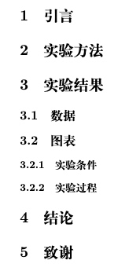
产生目录
% 产生目录 \tableofcontents
% 大纲
\section{引言}
\section{实验方法}
\section{实验结果}
\subsection{数据}
\subsection{图表}
\subsubsection{实验条件}
\subsubsection{实验过程}
\section{结论}
\section{致谢}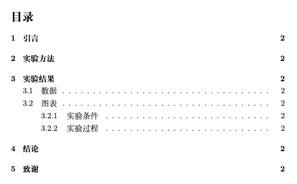
特殊字符处理
空白字符
% 空行分段，多空格等于一个空格 % 自动缩进，决不能使用空格代替
% 英文中多个空格处理为一个空格，中文会被忽略
% 汉字与其它字符的间距会制动由XeLaTeX处理
% 禁止使用中文全角空格% 1em (当前字体中m的宽度) a\quad b
% 2em
a\qquad b
% 约1/6个em
a\,b a\thinspace b
% 0.5个em
a\enspace b
% 空格
a\ b
% 硬空格
a~b
% 1pc=12pt=4.218mm
a\kern 1pc b
a\kern -1em b
a\hskip 1em b
a\hspace{35pt} b
% 占位宽度
a\hphantom{xyz} b
% 弹性长度
a\hfill b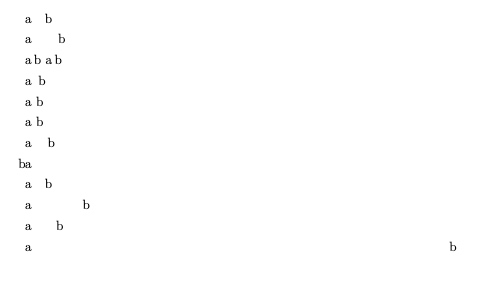
控制符
% 下面字符在latex 中有特殊定义所以需要转译 \# \$ \% \{ \} \~{} \_{} \^{} \textbackslash \&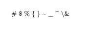
排版符号
\S \P \dag \ddag \copyright \pounds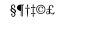
标志符号
\Tex{} \LaTeX{} \LaTeXe{}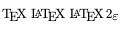
\documentclass[10pt]{article} \usepackage{ctex}
\usepackage{xltxtra}
\usepackage{texnames}
\usepackage{mflogo}
\begin{document}
% xltxtra 宏包提供
\XeLaTeX
% texnames 宏包提供
\AmSTeX{} \AmS-\LaTeX{}
\BibTeX{} \LuaTeX
% mflogo 宏包提供
\METAFONT{} \MF{} \MP{}
\end{document}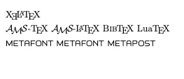
引号
% 和常规的单双引号不同 （撇号 和 单引号） `您好'
``您好''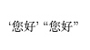
连字符
% - -- ---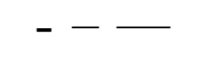
非英文字符
\oe \OE \ae \AE \AA \o \O \l \L \ss \SS !`?'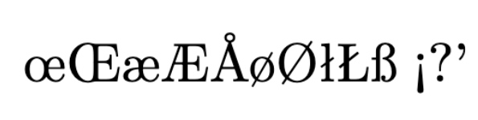
重音符号
\`o \'o \^o \~o \=o \u{o} \v{o} \H{o} \r{o} \t{o} \b{o} \c{o} \d{o}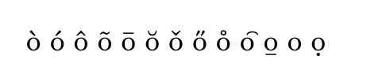
插图
- 导入插入宏包
\usepackage{graphicx} 使用语法
\includegraphics[<选项>]{文件名}支持格式：
EPS,PDF,PNG,JPNG,BMP指定搜索路径
\graphicspath{{image/}} % 表示当前文件夹中 image 文件夹下参数讲解
% 缩放比 \includegraphics[scale=0.3]{}
% 指定高度
\includegraphics[height=15cm]{}
% 指定宽度
\includegraphics[width=2cm]{}
% 版型文本高度的0.1
\includegraphics[height=0.1\textheight]{}
% 版型文本宽度的0.1
\includegraphics[width=0.1\textwidth]{}
% 旋转角度
\includegraphics[angle=45]{}
% 多参数
\includegraphics[angle=45, width=2cm]{}graphicx帮助文档texdoc graphicx
- 导入插入宏包
表格
基本表格
% l 表示居左 c 表示居中 r 表示居右 （l c c c r (表示有五列分别是 居左 居中 居中 居中 居右)） \begin{tabular}{l c c c r}
姓名 & 语文 & 数学 & 外语 & 备注 \\
李四 & 87 & 100 & 93 & 优秀 \\
张三 & 87 & 100 & 33 & 补考 \\
网二 & 66 & 70 & 63 & 一般 \\
\end{tabular}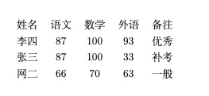
带竖线的表格
% 用 | 分割就可以得到带竖线的表格 \begin{tabular}{|l|c|c|c|r|}
姓名 & 语文 & 数学 & 外语 & 备注 \\
李四 & 87 & 100 & 93 & 优秀 \\
张三 & 87 & 100 & 33 & 补考 \\
网二 & 66 & 70 & 63 & 一般 \\
\end{tabular}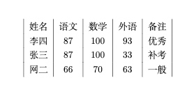
% 多条竖线表示多竖线表格 \begin{tabular}{||l|c|c|c|r||}
姓名 & 语文 & 数学 & 外语 & 备注 \\
李四 & 87 & 100 & 93 & 优秀 \\
张三 & 87 & 100 & 33 & 补考 \\
网二 & 66 & 70 & 63 & 一般 \\
\end{tabular}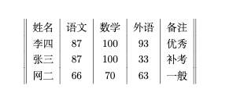
横线表格
% 通过 \hline 来添加横线 \begin{tabular}{||l|c|c|c|r||}
\hline
姓名 & 语文 & 数学 & 外语 & 备注 \\
\hline
\hline
李四 & 87 & 100 & 93 & 优秀 \\
\hline
张三 & 87 & 100 & 33 & 补考 \\
\hline
网二 & 66 & 70 & 63 & 一般 \\
\hline
\end{tabular}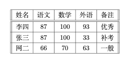
指定宽度表格
% 通过p{宽度}来指定表格宽度 超过宽度就会换行 \begin{tabular}{||l|c|c|c|p{1.5cm}||}
\hline
姓名 & 语文 & 数学 & 外语 & 备注 \\
\hline
\hline
李四 & 87 & 100 & 93 & 超级超级优秀 \\
\hline
张三 & 87 & 100 & 33 & 补考 \\
\hline
网二 & 66 & 70 & 63 & 一般 \\
\hline
\end{tabular}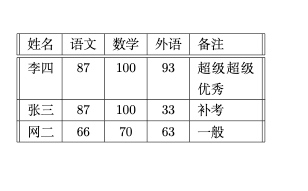
一些特殊的表格格式可以使用对应的宏包来处理
% 其宏包文档命令 % 三线表
texdoc booktab
% 跨越长表格
texdoc longtab
% 综合表格宏包
texdoc tabu
浮动体
浮动就是脱离文档流，可以理解成漂浮在文档之上figure浮动体 （同下）\begin{figure} \end{figure}table浮动体\begin{table} \end{table}居中
\begin{table} \centering
\begin{tabular}{|l|c|c|c|r|}
\hline
姓名 & 语文 & 数学 & 外语 & 备注 \\
\hline
\hline
张三 & 87 & 100 & 33 & 补考 \\
\hline
网二 & 66 & 70 & 63 & 一般 \\
\hline
\end{tabular}
\end{table}编号
\begin{table} \centering
\begin{tabular}{|l|c|c|c|r|}
\hline
姓名 & 语文 & 数学 & 外语 & 备注 \\
\hline
\hline
张三 & 87 & 100 & 33 & 补考 \\
\hline
网二 & 66 & 70 & 63 & 一般 \\
\hline
\end{tabular}
\caption{表格}
\end{table}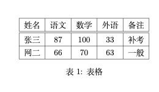
标签
引用表 \ref{table-1} \begin{table}
\centering
\begin{tabular}{|l|c|c|c|r|}
\hline
姓名 & 语文 & 数学 & 外语 & 备注 \\
\hline
\hline
张三 & 87 & 100 & 33 & 补考 \\
\hline
网二 & 66 & 70 & 63 & 一般 \\
\hline
\end{tabular}
\caption{表格} \label{table-1}
\end{table}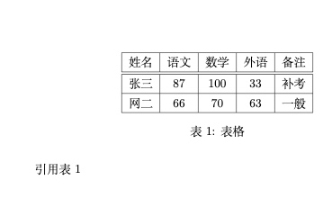
位置
% <允许位置>参数默认（tbp） % h 此处 （here）代码所在文字
% t 页顶 （top）代码所在页面或之后页面的顶部
% b 页低 （bottom） 代码所在页面或之后页面的底部
% p 独立一页 （page）浮动页面% 引用表命令 \ref{lable名} 引用表 \ref{table-1}
% htbp 代表所有位置都可以
\begin{table}[htbp]
\centering
\begin{tabular}{|l|c|c|c|r|}
\hline
姓名 & 语文 & 数学 & 外语 & 备注 \\
\hline
\hline
张三 & 87 & 100 & 33 & 补考 \\
\hline
网二 & 66 & 70 & 63 & 一般 \\
\hline
\end{tabular}
\caption{表格} \label{table-1}
\end{table}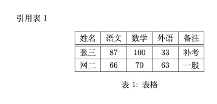
数学公式
上下标
上标
\begin{document} $3x^{20} + 5 = 0$
\end{document}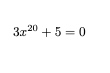
下标
\begin{document} $3x_{20} + 5 = 0$
\end{document}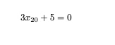
希腊字母
\begin{document} $\aleph$
$\beta$
$\gamma$
$\epsilon$
$\pi$
$\omega$
$\Gamma$
$\Delta$
$\Theta$
$\Pi$
$\Omega$
\end{document}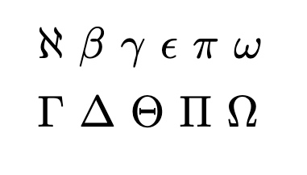
数学函数
\begin{document} $\log$
$\sin$
$\cos$
$\arccos$
$\arcsin$
$\ln$
$\sin^2x + \cos^2x = 1$
\end{document}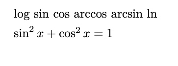
分式
$\frac{x}{x^2+x-1}$ $\frac{\sqrt{x^2+2}}{10}$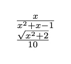
矩阵
引入宏包
\usepackage{amsmath}不同矩阵
不带任何线
\[ \begin{matrix}
0 & 1 \\
2 & 3
\end{matrix}
\]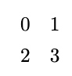
带线的
\dots : 横 \vdots : 竖
\ddots : 右斜\[ % 小括号
\begin{pmatrix}
0 & 1 \\
2 & 3
\end{pmatrix} \qquad
% 中括号
\begin{bmatrix}
0 & 1 \\
2 & 3
\end{bmatrix} \qquad
% 大括号
\begin{Bmatrix}
0 & 1 \\
2 & 3
\end{Bmatrix} \qquad
% 一条竖线
\begin{vmatrix}
0 & 1 \\
2 & 3
\end{vmatrix} \qquad
% 两条竖线
\begin{Vmatrix}
0 & 1 \\
2 & 3
\end{Vmatrix}
\]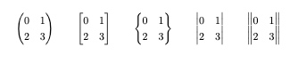
省略号
\[ A = \begin{bmatrix}
a_{11} & \dots & a_{1n} \\
& \ddots & \vdots \\
a_{n1} && \dots & a_{nn}
\end{bmatrix}_{n \times n}
\]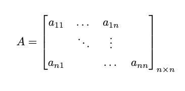
自定义命令
新定义命令
% \newcommand-定义命令 % 命令只能由字母组成不能以 \end 开头
% \newcommand<命令>[<参数个数>][<首参数默认值>]{{具体定义}}\newcommand\PRC{People's Republic \emph{China}} \begin{document}
\PRC
\end{document}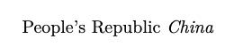
\newcommand\loves[2]{#1 喜欢 #2！} \begin{document}
\loves{猫儿}{鱼}
\end{document}\newcommand\loves[3][喜欢]{#2#1#3！} \begin{document}
\loves{猫儿}{鱼}
\loves[最爱]{猫儿}{鱼}
\end{document}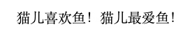
重新定义命令
% \renewcommand-重定义命令 % 与 \newcommand 命令作用和用法相同，但是只能用于已有的命令
% \renewcommand<命令>[<参数个数>][<首参数默认值>]{{具体定义}}定义和重定义环境
\newenvironment{<环境名称>}[<参数个数>][<首参数默认值>]{<环境前定义>}{<环境后定义>} \renewenvironment{<环境名称>}[<参数个数>][<首参数默认值>]{<环境前定义>}{<环境后定义>}\newenvironment{myabstract}[1][摘要]{ \small
\begin{center}
\bfseries #1
\end{center}
\begin{quotation}
}{
\end{quotation}
}
\begin{document}
\begin{myabstract}
这是一段自定义格式的摘要
\end{myabstract}
\begin{myabstract}[我的摘要]
这是一段自定义格式的摘要
\end{myabstract}
\end{document}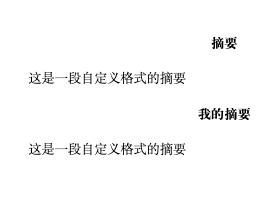
一些常用命令
\par % 产生新段落 % 插入空行也可以产生新段落
\\ % 换行不产生新段落
\text{} 在公式在使用 可以显示中文